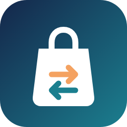

Keep products, stock, orders, customers and tracking in sync between Shopify and Odoo, without double entry.
Real-time webhooks. A retry queue that never loses an order. Workflows that invoice and ship by themselves. Safe mode for the first run.
Odoo 17.0 GraphQL Admin API Multi-store No extra libraries
Selling on Shopify and keeping the books, stock and deliveries in Odoo usually means one of two things: somebody retypes orders every morning, or a connector that works until the first unknown SKU, the first duplicate webhook or the first expired token.
This connector is built around the failures. Every Shopify event becomes a job in a queue. If something cannot be matched, the job waits, you get an activity that names the problem, and the order imports itself after you fix it. Nothing is dropped and nothing is created twice.
Everything lands in standard Odoo records: sales orders, deliveries, invoices, credit notes, partners and products. Reports, invoicing and shipping keep working the way your team already knows.
Orders typed in twice, tracking copied by hand, stock counted in two places.
Stock in Shopify drifts from the warehouse unless it is pushed after every change.
A webhook fails once and the order never arrives. Nobody notices until the customer writes.
A new SKU on Shopify blocks the whole import behind one error.
Prices with and without tax, shipping with tax, rounding. The Odoo total must equal the Shopify total.
When it breaks you read a server log. You need a screen with a queue and a reason.
Eleven flows. Each one can be switched off per store, and safe mode blocks everything that writes to Shopify.
Shopify calls a signed webhook address on your Odoo. The connector calls the GraphQL Admin API. Both paths go through the same queue.
The store form. Credentials are only visible to the Shopify Manager group.
| Access scope | Used for |
|---|---|
read_products | Read products and variants |
write_products | Create and update products |
read_inventory | Read stock levels |
write_inventory | Update stock levels |
read_locations | Read locations |
read_orders | Read orders, refunds and abandoned checkouts |
write_orders | Cancel orders |
read_customers | Read customers |
write_customers | Create and update customers |
read_merchant_managed_fulfillment_orders | Read fulfillment orders |
write_merchant_managed_fulfillment_orders | Send tracking numbers (create fulfillments) |
Optional:
| Access scope | Used for |
|---|---|
read_all_orders | Orders older than 60 days. Needed for a historical import. |
read_shopify_payments_payouts | Payouts. Needs Shopify Payments on the store. |
my-shop.myshopify.com, a full URL is cleaned up), authentication Client credentials, client ID, client secret.Choose Admin API access token, paste the token, and paste the app secret key as the webhook secret so signatures can be checked. Shopify no longer shows new legacy tokens, so this is for apps that already have one.
Odoo must be reachable by Shopify over public HTTPS (system parameter web.base.url). Press Register webhooks. The connector creates one subscription per topic that points to this address, and the Webhooks tab shows how many deliveries each topic has received:
https://your-odoo.example.com/axsync_shopify/webhook/<store id>If your Odoo is private, skip this step. The scheduled import still picks everything up every 15 minutes.
One card per store with orders, products, customers, waiting jobs, failed jobs and sales. A badge shows Connected, Error or Safe mode.
Open a card for the store form with a button for every action: import orders, export products, export stock, send tracking, import customers, checkouts and payouts.
Connection, orders, products, inventory, customers, automation and webhooks, each on its own tab. Every rule in this document is a field here.
Orders tab: defaults for imported orders, import rules and the payment statuses to import.
Import products from Shopify and match them to Odoo by variant map, then SKU, then barcode. Unknown products can be created, with attributes built from the Shopify options, or left alone with an activity for you.
Export products as draft or active, with variants, options, price, compare-at price, barcode, weight, tags, vendor, product type, SEO title and description, the main image and mapped metafields. Run it again and the same Shopify product is updated, never duplicated.
Publish, set to draft or archive from Odoo. Exclude single products with one checkbox.
| Price rule | How it works |
|---|---|
| Pricelist | The price of each variant comes from the pricelist set on the store. |
| Markup | A percent added on top, for example 10. |
| Rounding | For example 0.05 rounds to five cents. 0.99 style endings need a custom rounding rule in the pricelist. |
| Compare-at | When the pricelist price is below the sales price, the sales price is sent as the compare-at price. |
A Shopify tab on the product form holds the exclusion switch, whether the product is published, vendor, product type, tags and the SEO fields. A server action Export to Shopify on the product list sends the selected products to every connected store.
Choose the quantity (free, on hand or forecast), a percentage, a safety stock and a cap. Each Shopify location is mapped to one Odoo warehouse. Only quantities that changed since the last export are sent, in batches of 100. Press Export all quantities now to resend everything, or import the quantities from Shopify as inventory adjustments.
Locations map to warehouses. Services and excluded products are never sent.
Orders arrive by webhook or by schedule, with a filter on the payment status. The job asks Shopify for the complete current order, so a late or repeated webhook can never overwrite newer data.
Imported orders with payment and fulfillment status.
A workflow says what to do with an order when it arrives: confirm, validate the delivery, create the invoice, post it and register the payment in a journal.
Pick the workflow by payment status, or override it for a payment gateway, for example bank transfer orders stay quotations until the money arrives. Journals are mapped per gateway.
If a step fails, the order stays as it is, the reason is written on the order and in the log, and the rest of the import continues.
An order with a SKU that Odoo does not know is not created halfway. It stays in the queue as a waiting job, and an activity is scheduled for the person you chose: Line "Linen towel" (SKU TOWEL-9) has no matching product.
Fix the SKU or create the product, and the next queue run imports the order. The same applies to products found in Shopify with no Odoo match.
When a delivery is done in Odoo, the connector asks Shopify for the open fulfillment orders and sends the quantities that were really delivered, with carrier, tracking number and link. Partial shipments and backorders work: each delivery sends its own part.
Enter the tracking data on the delivery, or let it come from the delivery carrier fields when the Delivery app is installed. If the order was already fulfilled in Shopify, the delivery is marked as sent and nothing is duplicated.
Import customers from Shopify or export Odoo customers. Matching goes by Shopify id, email and phone, so existing partners are reused. Shopify tags become partner categories, and addresses are created with country and state.
Every delivery is verified with the HMAC-SHA256 signature in the X-Shopify-Hmac-SHA256 header, checked against the raw body. A wrong signature is answered with 401 and nothing is stored. A repeated delivery id is ignored. The answer is sent at once, and the work happens from the queue.
| Topic | What the connector does |
|---|---|
orders/create, orders/updated, orders/cancelled | Fetch the order and create or update it in Odoo |
refunds/create | Fetch the order and create the credit note |
fulfillments/create | Refresh the order status, note it on the order |
products/create, products/update, products/delete | Refresh the product map or mark it deleted |
customers/create, customers/update | Refresh the customer |
inventory_levels/update | Forget the quantity sent so the next export puts it right |
checkouts/create, checkouts/update | Refresh abandoned checkouts (only when enabled) |
app/uninstalled | Mark the store as Error with the reason |
customers/data_request, customers/redact, shop/redact | Written to the log (privacy requests, see FAQ) |
Each topic can be switched off without touching Shopify, and shows how many deliveries arrived.
Every import, export and failure is written to a log with the store, the operation and the reference. Errors are kept, routine entries are cleaned after 60 days. The dashboard shows waiting and failed jobs, and the queue offers Retry and Run now for any selection.
Abandoned checkouts come in with the email, the items, the total and the recovery link. Pick the ones you want to chase and create a follow-up activity with one button. Checkouts that were completed afterwards are marked as recovered.
Shopify Payments payouts are listed with gross, fees, refunds and net, ready to compare with your bank statement. Payouts are not reconciled automatically.
Orders open in a list, a pivot and a graph, grouped by store and period. The standard sales reports keep working, because these are standard sales orders.
Connect several Shopify stores, each with its own company, warehouse, pricelist, workflows and schedule. Records are limited to the allowed companies.
Imports keep working, nothing is ever written to Shopify. Perfect for the first run against a live store.
Type #1042 and import exactly that order, even outside the normal import window.
Map a Shopify metafield to an Odoo field, in or out, for orders, products and customers.
Ignore a topic in Odoo without changing anything in Shopify.
The connector reads the cost data of every answer, waits when the bucket is low and retries throttled requests.
A 401 triggers one silent renewal and a retry. A broken connection puts the store in Error with the reason, and the other stores keep running.
Unknown SKUs and unmatched products become activities for the person you choose, once.
Shopify customer tags become partner categories.
The customer note, tags and sales channel are posted on the order.
Totals are compared and small differences absorbed, large ones reported.
Exported product images are served from a signed link that works for Shopify and nobody else.
| Action | Interval | Per store switch |
|---|---|---|
| Process queue | every 5 minutes | no |
| Import orders | every 15 minutes | yes |
| Export stock | every 30 minutes | yes |
| Send tracking numbers | every 15 minutes | yes |
| Import products | every hour | yes |
| Import abandoned checkouts | every hour | yes |
| Import payouts | every day | yes |
| Clean old logs | every day | no |
Intervals can be changed in Settings, Technical, Scheduled Actions. Every action respects safe mode and skips stores that are not connected.
The 94 automated tests run against a simulated Shopify that was written from the public Admin API documentation. They prove what happens on the Odoo side: matching, prices, taxes, workflows, queue, retries, webhooks, signatures and access rights, on Odoo 17.0.
A simulator cannot prove that every field name and every mutation argument matches your live shop today. Shopify changes its API every quarter. Before you go live, spend half an hour on a Shopify development store with the checklist below and switch on safe mode for the first live run.
The connector sends the API version set on the store (default 2026-10). If Shopify retires a field, all queries are kept in one file, so a fix is small.
| Check on a development store | What you should see |
|---|---|
| Connect and test | Shop name, currency, granted scopes, two locations |
| Export a product with two variants and an image | A draft product with options, prices and the image |
| Export stock | The quantity appears on the right location |
| Create a test order in Shopify and import it | A quotation or confirmed order with the right total |
| Deliver it in Odoo with a tracking number | The order shows as fulfilled with the tracking link |
| Refund one line in Shopify | A credit note with that line |
| Cancel an unpaid test order in Odoo | The Shopify order is cancelled |
| Register webhooks and place another order | The webhook counter grows and the order appears within seconds |
| Shopify Payments stores: import payouts | Payouts with net and fees |
| Import abandoned checkouts | The checkout appears with its recovery link |
No retyping of orders, no copying of tracking numbers, no stock updates by hand.
Stock follows the warehouse, with a buffer you control.
Invoices, payments and credit notes created from the same orders, with matching totals.
A queue, retries and a visible reason for every failure.
Safe mode, a checklist and per-store switches let you start small.
Standard groups, activities, cron jobs and views. No external service and no extra library.
| Odoo version | 17.0 only. Separate builds exist for 16, 17, 18, 19 and 20. |
|---|---|
| Required Odoo apps | Sales, Inventory (sale_stock), Invoicing and Discuss. Delivery carriers are used for tracking when installed. |
| Python libraries | None beyond Odoo itself. |
| Shopify | Admin GraphQL API, version 2026-10 by default, set per store. Dev Dashboard app or existing Admin API token. |
| Hosting | Self-hosted and Odoo.sh. Odoo Online (SaaS) does not allow custom modules and is not supported. |
| Network | Public HTTPS for webhooks and for product images. Outgoing HTTPS to your store. |
| Testing | 94 automated tests (unit, queue and HTTP, including webhook signatures) run on Odoo 17.0 against a simulated Shopify, and the interface was checked in a browser against a demo database. Enterprise has not been tested. |
A Dev Dashboard app in the same Shopify organization as the store, with the scopes listed above. Odoo uses the client credentials grant. If you already own a custom app with an Admin API token, you can paste that token instead.
For webhooks and product images, yes. Without a public address the connector still imports orders and exports stock and tracking on schedule.
Yes. Use a Shopify development store, or turn on safe mode on the live store: all imports work and nothing is written to Shopify.
The delivery id is stored and the second one is ignored. Even without it, an order can only be imported once per store.
The order waits in the queue, an activity names the line, and the order imports when you fix it. Or enable product creation on the store.
A scheduled action sends the quantities that changed since the last run, per location, using free, on hand or forecast quantity with your percentage, buffer and cap.
Yes. Each store has its own company, warehouse, pricelist, workflows, schedules and credentials.
If the workflow for the payment status says so. A paid order can be confirmed, delivered, invoiced, posted and paid in the journal of its payment gateway.
Map Shopify tax titles and rates to Odoo taxes, or let the connector find a sales tax with the same rate. Prices with and without tax are converted so the Odoo total matches Shopify.
The three privacy topics are accepted and written to the log with the shop domain. Deciding what to delete in Odoo stays with you.
Yes, per store. The default is 2026-10. Check the verification checklist after you change it.
Email hunain@axsync.com or use the Contact the Author option on this Odoo Apps Store page.
Install Shopify Odoo Connector, connect a development store, and run the checklist. Questions? hunain@axsync.com | www.axsync.com

Published by AXSync. This module is an independent product and is not made, endorsed or sponsored by Shopify Inc. or Odoo S.A. Shopify is a trademark of Shopify Inc. Odoo is a trademark of Odoo S.A.